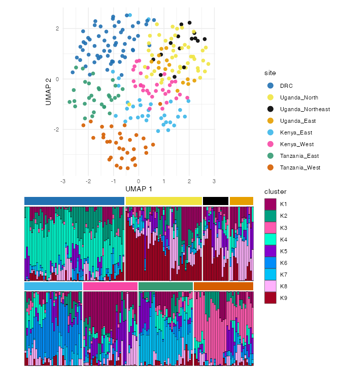
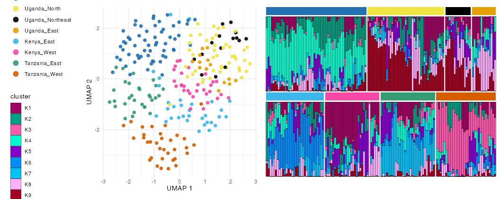

PopStructure is an R6 workspace that bundles a genotype
matrix, its PCA (the full prcomp), an optional UMAP
embedding, per-sample metadata, a shared colour map,
and an sNMF admixture fit — so PCA/UMAP/admixture colour and order
consistently, and the whole object can be saveRDS-ed and
re-plotted without recomputing.
Two public example datasets ship with the package:
"ghana_cambodia" (a minimal two-population demo) and
"africa" (258 East-African samples across DRC / Kenya /
Tanzania / Uganda sites, built from the most differentiating SNPs so the
structure is clear).
ps <- example_pop_structure("africa") # PCA + UMAP on the bundled genotypes
ps
ps$plot_pca(colour = "site")
ps$plot_umap(colour = "site")Feed the UMAP a chosen number of PCs, or a fraction of
variance to capture — the PCA runs first and picks that many
components (n_pcs_for_variance()) — and sub-select samples
(by id or metadata) for output:
ps$run_umap(pca_components = 0.5) # PCs covering 50% of the variance
west <- ps$subset(country = "Uganda") # a new object limited to Uganda sitesFix a metadata column’s order once and it flows through every legend, facet and colour strip; save and reload the whole workspace:
ps$set_levels("site", c("DRC", "Uganda_North", "Uganda_Northeast", "Uganda_East",
"Kenya_East", "Kenya_West", "Tanzania_East", "Tanzania_West"))
ps$save("popstruct.rds")
ps2 <- load_pop_structure("popstruct.rds")Admixture (sNMF)
run_snmf() fits sNMF over a range of K via LEA —
cached and quiet by default (it is slow and prints a
lot). best_k() picks K by cross-entropy; order the bars
once with admixture_order() and reuse that order across
K:
ps$run_snmf(K = 1:9) # re-runs are instant; no console spam
ord <- admixture_order(ps$q(ps$best_k()), meta = ps$get_meta(), group = "site")
ps$plot_admixture(K = ps$best_k(), group = "site", sample_order = ord)One combined figure
plot_structure_figure() draws the UMAP and the admixture
as one figure sharing a single theme (matching fonts),
one region colour map (UMAP points match the admixture colour strips),
collected legends, region-faceted bars (a colour strip, no text) over
rows you specify, and the UMAP above
("vertical") or beside ("horizontal") it:
rows <- list(c("DRC", "Uganda_North", "Uganda_Northeast", "Uganda_East"),
c("Kenya_East", "Kenya_West", "Tanzania_East", "Tanzania_West"))
plot_structure_figure(ps, group = "site", K = "best_k", rows = rows,
orientation = "vertical", file = "figure2.pdf") # auto-sized
The same call with orientation = "horizontal" puts the
UMAP to the left:

Per-sample bar borders (on by default) keep neighbours with nearly
identical ancestry distinct; legend_point_size,
point_size/point_alpha tune the UMAP.
From your own data
Build from a genotype matrix, or LD-prune a VCF first with
run_ld_prune() (SNPRelate), then attach metadata — colours
are auto-assigned per column and reused across every plot:
geno <- run_ld_prune("clean.snps.vcf.gz") # SNPRelate LD-pruned genotypes
ps <- PopStructure$new(geno, meta = sample_meta) # sample, region, country, ...
ps$run_umap(pca_components = 10)
ps$run_snmf(K = 1:8, cache_dir = "snmf_cache") # persistent cache survives sessions